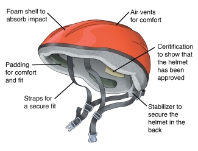

In here you will find some miscellaneous tips for biking around the city and campus as well as
habits to practice to keep your bike in top condition.
- Wipe down and lube your regularly (at least once a week).
Depending on weather conditions, you may need to lube even more frequently to prevent gunk
building up.
Your chain picks up a lot of grit and grime riding through the city so to keep your
expensive drivetrain
healthier for longer wipe it with a clean rag while backpedaling. Afterwards apply a drop of
lube on each link
of the chain and wipe off the excess with a rag. Be sure to ride it in afterwards!
- Always lock your bike while in public.
A simple cable lock works well on campus and deters any opportunistic thieves.
Try to find an immovable object (like a bike rack) in a well trafficked area to lock your
bike at. Make sure to lock your frame to the immovable object, or else
a thief could just remove your wheel and take off with the rest of your bike! Ideally your
lock should go around your backwheel, frame and a bike rack.
Good spots around campus include: the Posvar underpass, Barco Law Building on
Forbes, and Benedum .
- Wear a helmet!
Although studies have shown that wearing a helmet causes drivers to pass closer to you (
source
). It's still a good idea to wear a helmet as it could potentially save your life. Look for
a helmet that fits
snugly and has vents to let your head breathe. MIPS, a new technology incorporated in higher
end helmets, reduces
trauma to the brain in the case of oblique impacts.

- Ride confidently and be predictable.
With no bike lanes, use an entire lane on the road if necessary. Don't ride too close too
the curb
as you risk being hit by an opening door. If a car passes you they should be crossing the
center line to ensure you
have enough space. Follow traffic laws and don't make unexpected movements. Make sure to
also have a front and rear light for when it gets dark.
And if you don't have lights don't worry! The Pitt Bike Cave has lights
currently available for
free.
- Use hand signals when riding on the road
To be more predictable utilize hand signals to let drivers know your next moves. Simply
pointing in the direction you are turning
can give motorists a good idea of what you are doing.
- Visit the Pitt Bike Cave
For issues completely over your head, stop by the Pitt Bike Cave (located at the Posvar
underpass) for assistance
and advice. Service is completely free and they have a wide range of tools for your use. Find
more information including hours at this
link